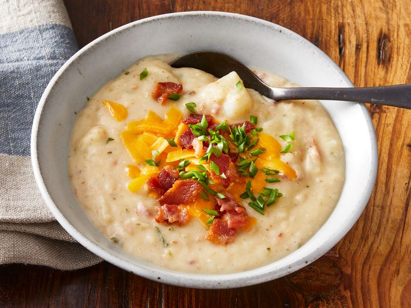

Ultimate Potato Soup Recipe

Simply delicious topped with crumbled bacon, green onions, or shredded Cheddar cheese.
This potato soup comes together quickly with basic ingredients. You'll find the full recipe below.
Ingredients:
- 1 pound bacon, chopped
- 2 stalks celery, diced
- 1 onion, chopped
- 3 cloves garlic, minced
- 8 potatoes, peeled and cubed
- 4 cups chicken stock, or enough to cover potatoes
- 3 tablespoons butter
- ¼ cup all-purpose flour
- 1 cup heavy cream
- 1 teaspoon dried tarragon
- 3 teaspoons chopped fresh cilantro
- salt and freshly ground black pepper to taste
Steps:
- Gather all ingredients.
- Place bacon in a Dutch oven and cook over medium-high heat, turning occasionally, until evenly browned, 5 to 10 minutes. Drain bacon pieces on paper towels. Drain off all but 1/4 cup of the bacon grease.
- Cook celery and onion in the reserved bacon drippings until onion is soft and translucent, about 5 minutes. Stir in garlic, and continue cooking for 1 to 2 minutes.
- Add cubed potatoes, and toss to coat. Sauté for 3 to 4 minutes. Return bacon to the pan, and add enough chicken stock to just cover the potatoes. Cover, and simmer until potatoes are tender, 15 to 20 minutes.
- Meanwhile, melt butter in a separate skillet over medium heat. Whisk in flour. Cook, stirring constantly, 1 to 2 minutes. Whisk in heavy cream, tarragon, and cilantro.
- Bring cream mixture to a boil, and cook, stirring constantly, until thickened, about 5 minutes. Add cream mixture to the potato mixture; stir to combine.
- Transfer about 1/2 of the soup to a blender and purée. Return to the Dutch oven. Adjust seasonings to taste.
- Serve hot and enjoy!